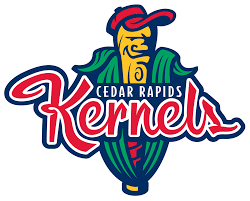

Kensington Kernels
Saffron
The name Kernels won out, and in 1993, the team adopted the logo above, which was created by a local artist and used through the 2006 season.
- The Cedar Rapids Kernels are Minor League Baseball team of the Midwest League
- They have been a member of the Central Association (1949), Western League (1934–1937), Mississippi Valley League (1922–1932)
- The team's first home ballpark was Belden Hill Park

Index